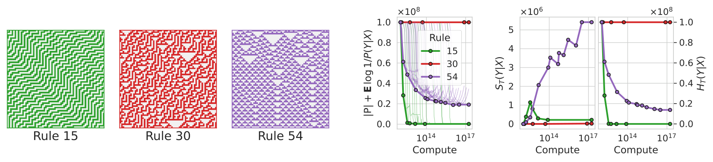
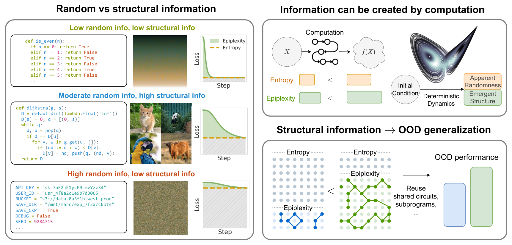
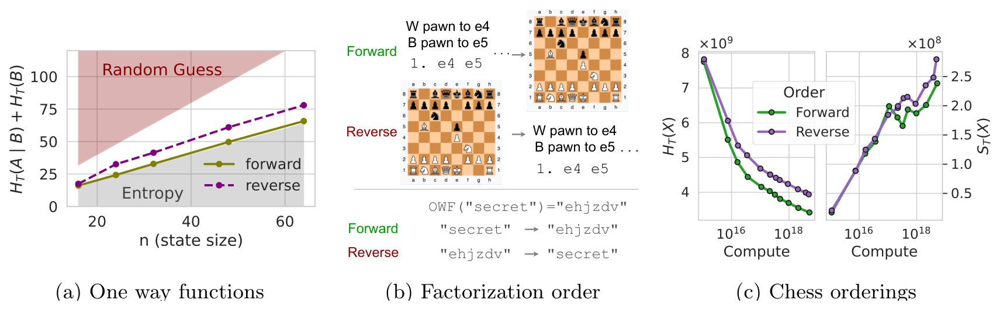
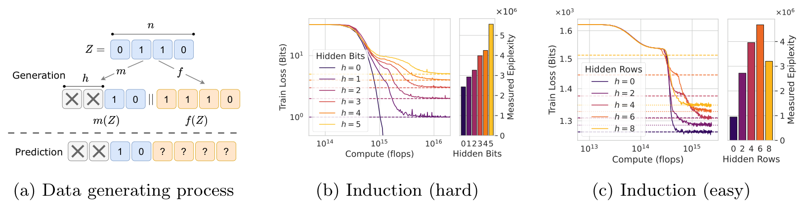
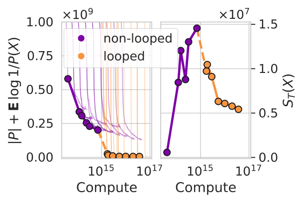
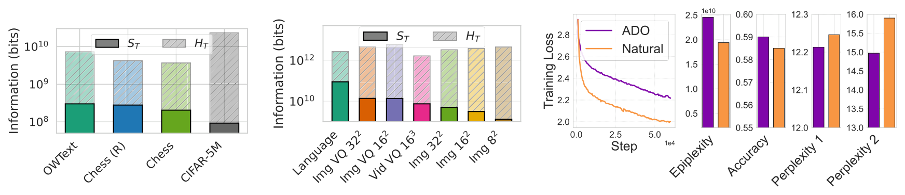
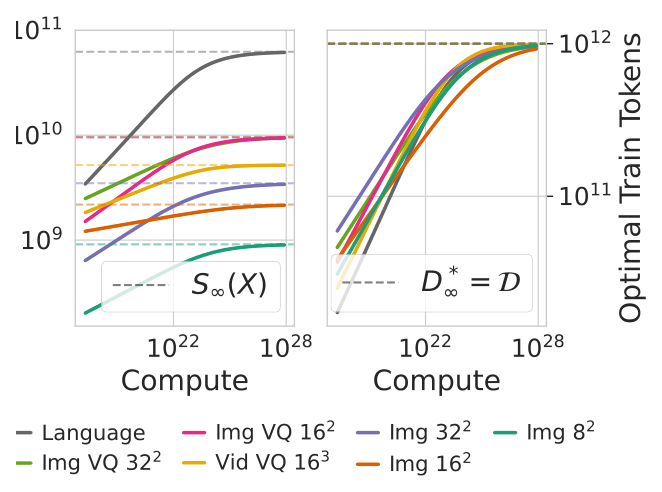

기존 정보이론(Shannon Entropy, Kolmogorov Complexity)은 "무한한 계산 능력"을 가진 관찰자를 전제하므로 현대 ML 현상을 설명하지 못한다. 이 논문은 계산 제약이 있는 관찰자의 관점에서 데이터의 정보를 구조적 정보(Epiplexity, \(S_T\))와 랜덤 정보(Time-bounded Entropy, \(H_T\))로 분리하는 새로운 체계를 제안한다.
"Model Selection"에서 "Data Selection"으로의 패러다임 전환을 위한 이론적 기반을 제공하며, 어떤 데이터가 더 유용한 학습 신호를 제공하는지를 측정하는 실용적 방법론도 함께 제시한다.
02 — Why It Matters
Motivation
왜 이 논문이 중요한가?
현대 AI 시스템의 핵심 질문들에 기존 이론이 답하지 못하는 이유
데이터 시대의 도래
현대 AI 연구의 성패는 아키텍처 선택보다 어떤 데이터로 학습하느냐에 더 크게 좌우된다. 모델 선택(model selection)에서 데이터 선택(data selection)으로 패러다임이 전환되고 있다.
고품질 인터넷 데이터의 고갈
합성 데이터의 가치는 무엇인가?
텍스트 사전학습이 왜 이미지보다 일반화가 좋은가?
어떤 데이터 큐레이션 전략이 최적인가?
AlphaZero 역설
AlphaZero는 체스 규칙(간단한 결정론적 프로그램)과 자기 대국만으로 초인적 전략을 학습하여 수 메가바이트의 가중치에 저장했다.
❓
기존 정보이론에 따르면, 결정론적 변환은 정보를 증가시킬 수 없다. 그렇다면 AlphaZero가 "학습한 정보"는 어디서 온 것인가?
✓
이 논문의 해답: 기존 이론은 무한한 계산 능력의 관찰자를 가정한다. 계산 제약(computation bound)을 도입하면, "정보"의 정의가 달라지고 위 질문들에 자연스러운 답을 줄 수 있다.
Chaitin의 불완전성: 특정 문자열이 높은 sophistication을 갖는다는 것을 증명할 수 없다
계산 무제한: 유체 혼합의 복잡한 행동도 무한 계산 + 초기 조건이면 단순 프로그램으로 재현 가능 → 낮은 sophistication
CSPRNG 오판: CSPRNG 출력은 짧은 프로그램(\(G + \text{seed}\))으로 생성 가능 → 낮은 Kolmogorov complexity. 하지만 다항 시간 관찰자에게는 랜덤이어야 함
실용 불가: 높은 sophistication의 최적 프로그램 실행 시간이 계산 가능한 함수보다 빠르게 증가
⚠
왜 time-bounded Kolmogorov complexity로 대체하면 안 되나? CSPRNG 출력은 짧고 효율적으로 실행 가능한 생성 프로그램이 있어서 시간 제한 K도 작다. Sophistication에 시간 제한을 넣으면 모든 문자열에 대해 trivial해진다 (Appendix A.6). 근본적으로 다른 접근이 필요하다.
📚
MDL Principle (Def 6): 모델 \(H\)와 모델에 의한 데이터 코딩의 총 기술 길이를 최소화: \(L(x) = \min_H [L(H) - \log P(x|H)]\). Sophistication이 "구조 분리"라면, MDL은 이를 실용적으로 구현한다. Epiplexity는 이 MDL에 계산 시간 제약을 추가한 것이다.
06 — Definition
Core Definition
Time-bounded Probabilistic Model
Definition 7 — 계산 시간 \(T\) 이내에 샘플링과 확률 평가가 모두 가능한 확률 모델
🛠
Definition 7: 프로그램 \(\mathsf{P}\)가 \(T\)-time probabilistic model이려면 두 가지를 시간 \(T(n)\) 이내에 수행해야 한다:
Evaluation: 입력 \((0, x)\)에 대해 \(\text{Prob}_\mathsf{P}(x) \in [0,1]\)을 출력
Sampling: 입력 \((1, u)\) (무한 랜덤 테이프)에 대해 \(\text{Sample}_\mathsf{P}(u) \in \{0,1\}^n\)을 출력
$S_T(X) = |\mathsf{P}^*|$ (Epiplexity: 최적 모델의 프로그램 크기)
$H_T(X) = \mathbb{E}\!\left[\log \frac{1}{P^*(X)}\right]$ (Time-bounded Entropy: 잔여 랜덤)
Epiplexity \(S_T(X)\)
데이터의 패턴을 설명하는 최적 모델의 프로그램 크기 (bits)
모델이 데이터에서 "배운 것"의 양
재사용 가능한 회로/서브프로그램의 총 기술 길이
계산 예산 \(T\) 증가 → 일반적으로 증가 (더 정교한 패턴 포착)
데이터 크기 \(D\) 증가 → 일반적으로 증가
Time-bounded Entropy \(H_T(X)\)
최적 모델로도 남는 예측 불가능한 노이즈
In-distribution에서의 비예측성 (test loss에 대응)
CSPRNG 출력은 거의 최대 (\(\approx n\))
계산 예산 \(T\) 증가 → 일반적으로 감소
총 정보 = \(\text{MDL}_T(X) = S_T(X) + H_T(X)\)
📚
비유: 데이터가 퍼즐이라면, Epiplexity = 퍼즐을 풀기 위한 전략/규칙의 복잡도, Time-bounded Entropy = 전략을 다 써도 남는 운(luck)에 의존하는 부분. Uniform random은 전략이 필요 없고(\(S_T \approx 0\)), 모두 운이다(\(H_T \approx n\)). 복잡한 알고리즘 코드는 전략이 많고(\(S_T\) 큼), 운이 적다(\(H_T\) 작음).
출력: \(H_{\text{Poly}}(G(U_k)) \approx n\) (다항 시간 관찰자에게 \(n\) bits 랜덤)
증가분: \(\approx n - k\) bits의 time-bounded 정보가 "생성"됨
결정론적 함수 \(G\)가 time-bounded 정보를 증가시킨 것이다! 핵심은 \(G\)의 역함수가 효율적으로 계산 불가하다는 것.
💡
직관: 무한 계산 관찰자는 \(G^{-1}\)을 실행하여 시드를 복원 → 정보량 = \(k\). 다항 시간 관찰자는 \(G^{-1}\)을 실행할 수 없음 → 출력이 랜덤으로 보임 → 정보량 = \(n\).
합성 데이터 시사점: 역함수가 효율적으로 계산 불가능한 변환을 사용하면, 합성 데이터도 새로운 정보를 "생성"할 수 있다.
13 — Paradox 1: Experiment
Experiment
Elementary Cellular Automata 실험
같은 형식의 간단한 규칙에서 근본적으로 다른 정보가 생성된다
Elementary Cellular Automata (ECA)는 1차원 이진 셀 배열이 간단한 규칙으로 진화하는 시스템이다 (256가지 규칙). 랜덤 초기 조건 \(X\)에서 48 단계 진화시킨 결과 \(Y = F(X)\)를 예측하는 LLM을 학습한다.
Rule 15 (Class II)
주기적 패턴. 역함수 간단. Loss 빠르게 수렴. \(H_T\) 낮음, \(S_T\) 낮음
Rule 30 (Class III)
카오스적. 역함수 어려움 (추정). Loss 거의 불변. \(H_T\) 최대, \(S_T\) 낮음
Rule 54 (Class IV)
복잡하지만 부분 예측 가능. Loss 꾸준히 감소. \(H_T\) 중간, \(S_T\) 높음!

Figure 3. 왼쪽: ECA 시각화 (시간은 위→아래). Rule 15는 단순 주기, Rule 30은 카오스, Rule 54는 글라이더 등 복잡한 구조. 오른쪽: compute에 따른 MDL, \(H_T\), \(S_T\) 변화. Rule 54만이 유의미한 epiplexity를 생산한다.
💡
핵심: 거의 동일한 프로그램(3가지 ECA 규칙)에서 근본적으로 다른 종류의 정보가 생성된다. Epiplexity는 이 차이를 정확히 포착한다. Rule 54처럼 "부분적으로 예측 가능한 복잡성"이 높은 epiplexity의 원천이다.

Figure 1. 왼쪽: 구조적/랜덤 정보 스펙트럼 — 반복 코드(낮음/낮음), 알고리즘(높음/중간), API 키(낮음/높음). 오른쪽 상단: 계산으로 정보 생성 (ECA, Lorenz attractor). 오른쪽 하단: Epiplexity → OOD 일반화 (재사용 가능한 회로).
14 — Paradox 2: Theory
Paradox 2
데이터 순서가 학습되는 정보를 바꾼다
Section 5.2 — 동일한 데이터도 factorization 순서에 따라 다른 time-bounded 정보를 가진다
🚫
기존 이론: Symmetry of Information — \(H(X,Y) = H(X|Y) + H(Y) = H(Y|X) + H(X)\). 순서가 바뀌어도 총 정보량은 동일. Kolmogorov에서도 \(K(Y|X) + K(X) = K(X|Y) + K(Y) + O(1)\).
따름정리 (Thm 26): 다항 시간 확률 모델은 one-way function의 정방향을 잘 맞추더라도, Bayes' theorem을 만족시킬 수 없다. 즉, \(P(X|Y)\)와 \(P(Y|X)\)가 동시에 정확할 수 없다.
15 — Paradox 2: Experiment
Experiment
체스 실험: Forward vs Reverse
동일한 체스 게임 데이터를 두 가지 순서로 모델링하면 결과가 달라진다
Forward
수순 → 최종 보드 간단한 시뮬레이션으로 보드 상태 계산 가능
vs
Reverse
최종 보드 → 수순 보드에서 수순 역추론 필요 → 더 복잡한 전략 학습
Lichess 데이터셋에서 각 게임을 (1) [수순, 최종 FEN] 순서와 (2) [최종 FEN, 수순] 순서로 각각 autoregressive transformer를 학습. Figure 4c에서:
Reverse 순서: 더 높은 \(H_T\) (예측하기 어려움) + 더 높은 \(S_T\) (더 많은 구조 학습)
낮은 compute에서는 두 순서의 차이 미미 → 표면 통계만 학습
compute 증가 시 갭이 확대 → Reverse가 더 깊은 보드 상태 표현을 학습

Figure 4. (a) ECA Rule 30으로 구현한 OWF: 정방향은 Shannon entropy에 도달하지만, 역방향은 영구적 갭 존재. (b) 체스 두 순서의 직관적 비교. (c) Reverse 순서가 더 높은 \(H_T\)와 \(S_T\)를 가진다.
16 — Paradox 3A: Induction
Paradox 3
모델은 생성 과정보다 더 많이 배울 수 있다: 귀납
Section 5.3.1 — 예측 모델이 데이터 생성자보다 복잡한 전략을 학습한다
"You're reading a murder mystery and at some point the text reveals the identity of the criminal. ... If the model can predict [the name] then it must have figured out [who perpetrated the murder from the evidence provided]."
— Ilya Sutskever, 2019
소설의 저자는 범인을 먼저 정하고 이야기를 쓴다 (간단한 생성 과정). 하지만 예측 모델은 증거에서 범인을 귀납적으로 추론해야 한다 — 데이터 생성 과정에는 없던 복잡한 전략이 필요하다.
실험 설계: 숨겨진 정보 + 변환
랜덤 변수 \(Z\)에서 마스킹 \(m\)으로 \(h\) bits를 숨기고, 변환 \(f\)를 적용: \(Y = (m(Z), f(Z))\). 예측 모델은 숨겨진 \(h\) bits에 대해 귀납해야 한다.
Hard Induction: Rule 30 ECA
\(f\) = Rule 30 ECA 4단계, \(h\) bits 숨김
모델은 \(2^h\)개 후보를 검토해야 함
수렴에 필요한 compute가 \(h\)에 지수적으로 증가
\(h > 0\)이면 epiplexity 증가
Easy Induction: Random Markov Chain
\(f\) = Markov chain 샘플, \(h\) rows 숨김
통계적 귀납(in-context learning)으로 해결 가능
\(0 < h < 8\)일 때 epiplexity 최대
제공된 정보 + 귀납 전략 = 두 전략을 동시 학습

Figure 5. (a) 데이터 생성: Z를 마스킹(m) + 변환(f)하여 Y 생성. (b) Hard: h가 클수록 지수적 compute 필요. (c) Easy: 0 < h < 8일 때 두 전략이 결합되어 epiplexity 최대.
💡
시사점: 귀납 전략은 데이터 생성 과정에 없던 것이지만, MLE 모델링을 통해 자연스럽게 학습된다. 이는 autoregressive 모델에 국한되지 않으며, VAE의 encoder가 posterior \(P(Z|X)\)를 학습하는 것도 같은 현상이다 (Appendix G).
17 — Paradox 3B: Emergence
Paradox 3
모델은 생성 과정보다 더 많이 배울 수 있다: 창발
Section 5.3.2 — 간단한 규칙의 반복이 계산 제한 관찰자에게 새로운 구조를 드러낸다
Conway's Game of Life나 ECA Rule 54처럼 간단한 규칙 \(\Phi\)를 \(k\)번 반복 적용하면(\(\Phi^k\)), 글라이더, 진동자, 충돌 규칙 등 창발적 패턴이 나타난다.
두 관찰자의 차이
충분한 계산 (\(T_2\)): \(\Phi\)를 \(k\)번 직접 반복 실행 → 짧은 프로그램으로 충분 → \(S_{T_2}\) 작음
제한된 계산 (\(T_1\)): \(\Phi^k\)를 직접 반복할 여유 없음 → 글라이더 종류, 속도, 충돌 규칙 등을 학습 → \(S_{T_1}\) 큼
🔬
Definition 14 (Epiplexity Emergent): 한 단계(\(\Phi\))에서 두 관찰자의 epiplexity 차이는 상수이지만, 다단계(\(\Phi^k\))에서 차이가 무한히 커지면 "epiplexity emergent"이다.

Figure 6. Non-looped 모델: 직접 최종 상태 예측 → compute 증가에 따라 epiplexity 증가 (점점 더 많은 종을 학습). Looped 모델: 충분한 compute에서 brute-force(중간 단계 반복) 학습 → epiplexity 급락.
💡
Chain-of-thought 연결: Looped transformer가 중간 단계를 반복하는 것은 chain-of-thought와 유사하다. 충분한 compute가 있으면 brute-force가 가능해지며, 이때 epiplexity가 오히려 감소한다. 실제 대부분의 자연 데이터에서는 brute-force가 비현실적이므로, 더 많은 compute = 더 높은 epiplexity.
18 — Application
Application
Epiplexity와 OOD 일반화
Section 6.1 — 더 높은 Epiplexity ≈ 더 좋은 OOD 성능의 신호
OOD 일반화는 모델이 재사용 가능한 구조를 얼마나 학습했느냐에 달려 있다. 같은 loss를 달성하더라도 학습한 구조의 양(epiplexity)이 다르면 OOD 성능이 달라진다.
체스 OOD 실험
Forward / Reverse 순서로 사전학습한 모델을 두 가지 downstream task에 fine-tune
Task 1: 체스 퍼즐 — 보드 상태에서 최적 수 예측
Task 2: Centipawn 평가 — FEN 표기에서 포지션 이점 평가 (더 큰 distribution shift)
Figure 7. Reverse 순서(높은 epiplexity)로 학습한 모델이 두 OOD task 모두에서 우수. 풍부한 보드 상태 표현이 transfer에 유리함.
📌
주의: 높은 epiplexity는 더 많은 구조를 학습했다는 의미이지, 특정 downstream task 성능을 보장하지는 않는다. Epiplexity는 구조의 양을 측정하지만, 그 구조가 특정 task에 관련되는지는 별개의 문제이다.
19 — Application
Application
자연 데이터의 Epiplexity & 데이터 선택
Section 6.2-6.4 — 텍스트 vs 이미지, VQ 토큰화, ADO 데이터 선택
자연 데이터의 정보 분해
OpenWebText (텍스트)
\(S_T\) 최대. 언어의 문법, 의미, 추론 등 풍부한 구조. 총 정보 대비 구조 비율이 높다.
Lichess (체스)
\(S_T\) 중간. 전략적 구조가 있지만 텍스트보다는 제한적.
CIFAR-5M (이미지)
총 정보량은 가장 많지만 \(S_T\) 최소. 99%+ 정보가 랜덤 (픽셀 노이즈).
이미지를 VQ 토큰으로 변환하면 epiplexity가 크게 증가 — 모델이 저수준 픽셀 대신 고수준 의미 구조에 집중할 수 있기 때문이다. 비디오는 시간 축 중복으로 이미지보다 더 낮은 epiplexity.

Figure 8. (a) Requential coding으로 측정한 자연 데이터의 epiplexity. 텍스트 >> 체스 >> 이미지. (b) Scaling law 기반 추정 (1T 토큰, \(10^{25}\) FLOPs). VQ 토큰화가 이미지 epiplexity를 크게 높임. (c) ADO로 선택한 데이터가 더 높은 epiplexity와 downstream 성능.
ADO: 데이터 선택과 Epiplexity
Adaptive Data Optimization (ADO, Jiang et al. 2025)은 loss가 빠르게 감소하는 데이터 서브셋을 온라인으로 선호한다. 이는 결과적으로 loss 곡선 아래 면적(= prequential epiplexity)이 큰 데이터를 선택하는 것과 같다.
📌
데이터 선택 원칙 (Data Selection Principles):
총 바이트 수가 아니라 구조적 정보(Epiplexity)가 높은 데이터를 선택
Loss가 꾸준히 감소하는 데이터 = 높은 epiplexity의 신호
합성 데이터도 역함수가 어려운 변환을 사용하면 유용
VQ 등 적절한 토큰화로 이미지/비디오 데이터의 epiplexity를 높일 수 있음

Figure 9. Scaling law를 통해 추정한 epiplexity와 최적 학습 토큰 수. 데이터 양이 고정되면 compute가 무한히 커져도 epiplexity는 유한한 값에 수렴한다.
20 — Discussion
Wrap-up
정리 & 토론 포인트
핵심 메시지 요약
질문
기존 이론
이 논문 (Epiplexity)
정보를 만들 수 있는가?
No (DPI)
Yes — 역함수가 어려운 변환으로 (Thm 12)
순서가 중요한가?
No (Symmetry)
Yes — OWP로 비대칭 (Thm 13)
생성 과정 이상 배울 수 있나?
No (Distribution matching)
Yes — 귀납 + 창발 (Sec 5.3)
합성 데이터의 가치?
DPI에 의해 없음
역함수 어려우면 있음 (Thm 12)
텍스트 vs 이미지?
설명 불가
텍스트가 압도적 높은 \(S_T\)
✓
핵심 기여
Epiplexity: 계산 제약 하 추출 가능 구조적 정보 형식화
세 역설을 이론(Thm 9, 10, 12, 13) + 실험으로 해소
Prequential/Requential 측정 방법 제안
"Model Selection" → "Data Selection" 패러다임 전환
자연 데이터 간 구조적 정보 비교 프레임워크
⚠
한계 & 열린 문제
높은 \(S_T\) ≠ 특정 task 성능 보장
이론적 하한 \(\Omega(\log n)\) vs 실제 power law 스케일링
측정에 대규모 모델 학습이 필요 (고비용)
poly vs non-poly 외 세밀한 계산 제약 탐구 필요
메모리 제약, 아키텍처 특화 분석 미포함
세미나 토론 포인트
Epiplexity를 실제 LLM 학습 파이프라인의 데이터 선택에 어떻게 적용할 수 있을까?
계산 제약 \(T\)의 선택 기준은? — 실제 학습 FLOP? 아키텍처 특성?
Chain-of-thought는 Emergence 관점에서 "T를 늘려 brute-force에 접근"하는 것인가?
이미지 데이터의 epiplexity를 높이려면 어떤 전처리/토크나이제이션이 효과적인가?
Scaling law exponent(\(\beta\))와 데이터의 epiplexity 사이의 관계는?